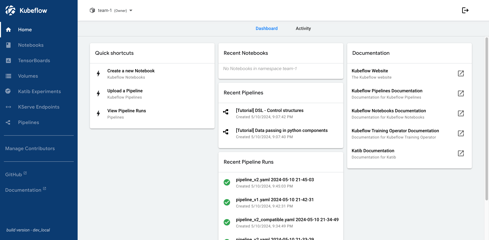
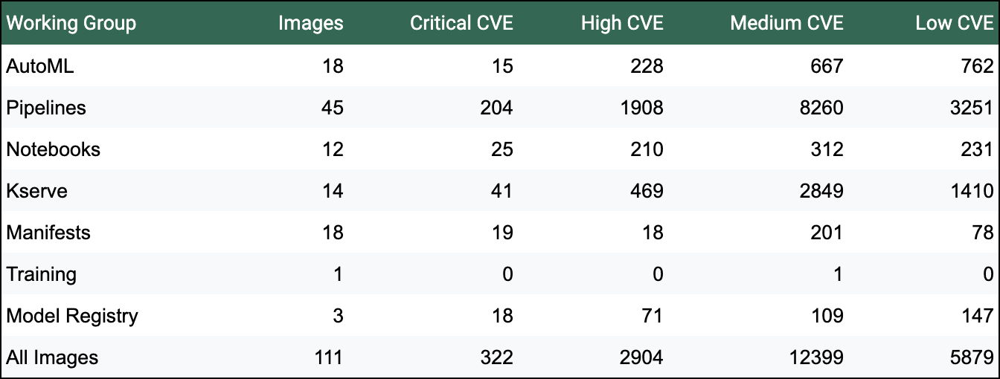

Kubeflow 1.9: New Tools for Model Management and Training Optimization
Kubeflow 1.9 significantly simplifies the development, tuning and management of secure machine learning models and LLMs. Highlights include:
- Model Registry: Centralized management for ML models, versions, and artifacts.
- Fine-Tune APIs for LLMs: Simplifies fine-tuning of LLMs with custom datasets.
- Pipelines: Consolidation of Tekton and Argo Workflows backends for improved flexibility.
- Security Enhancements: Network policies, Oauth2-proxy, and CVE scanning.
- Integration Upgrades: Improved integrations with Ray, Seldon, BentoML, and KServe for LLM GPU optimizations.
- Installation and Documentation: Streamlined installation, updated platform dependencies, and enhanced documentation.
These updates aim to simplify workflows, improve integration dependencies, and provide Kubernetes-native operational efficiencies for enterprise scale, security, and isolation.
Model Registry
A model registry provides a central catalog for ML model developers to index and manage models, versions, and ML artifacts metadata. It fills a gap between model experimentation and production activities. It provides a central interface for all stakeholders in the ML lifecycle to collaborate on ML models. Model registry has been asked by the community for a long time and we are delighted to introduce it to the Kubeflow ecosystem.
This initial release includes REST APIs and a Python SDK to track model artifacts and model metadata with a standardized format that can be reused across Kubeflow components, such as to deploy Inference Servers. You can get started by following the Model Registry tutorial on the Kubeflow website, or see a short demo video of the Model Registry in action.
We are just getting started. This is an Alpha version and we look forward to feedback. The model registry working group meets biweekly: you can provide feedback by joining the meeting or directly on the repository.
Fine-Tune APIs for LLMs
In the rapidly evolving ML/AI landscape, the ability to fine-tune pre-trained models represents a significant leap towards achieving custom solutions with less effort and time. Fine-tuning with custom datasets allows practitioners to adapt large language models (LLMs) to their specific needs.
However, fine-tuning tasks often require extensive manual intervention, including the configuration of training environments and the distribution of data across nodes. The new Fine-Tune API aims to simplify this process, offering an easy-to-use Python interface that abstracts away the complexity involved in setting up and executing fine-tuning tasks on distributed systems.
By providing this API, Training Operator not only simplifies the user experience for ML practitioners but also leverages its existing infrastructure for distributed training. You can take advantage of Kubernetes’ ability to dynamically schedule GPU, thus saving on compute resources and cost. Training Operator also gives you fault tolerant guarantees, to save your training procedures from cluster node failures.
Pipelines
v1 Feature Parity
We made significant progress towards KFPv1 feature parity by adding more Kubernetes resources to the Pipelines code with the new kfp-kubernetes 1.2.0 Python package. We encourage every KFP user to test the new V2 functionality and plan your migration from V1 to V2. We still have some outstanding features that need to be ported over to V2, please help us to identify what’s missing by openining a new issue in the KFP repository.
Argo Workflows and Tekton Backends Consolidation
The Pipelines Tekton backend has been merged into the main Kubeflow Pipelines repository. You can now choose what workflow engine to use from the same Pipelines version. This proves the extensibility and flexibility of the KFP v2 architecture, which encourages other contributors to bring support for other workflow engines.
Both Argo Workflows and Tekton provide unique advantages. Argo Workflows is known for its simplicity and ease of use, making it a popular choice for many users. Tekton offers extensive customization options with its pipeline definitions and reusable components, which can be advantageous for integrating into various CI/CD systems. Depending on your specific requirements and preferences, you can leverage the strengths of either Argo Workflows or Tekton to optimize your machine learning workflows.
In this blog post, you can find more details about the benefits of running KFP with either Tekton or Argo Workflows.
Argo Workflows Upgrade
Kubeflow Pipelines’s Argo Workflows backend is upgraded to 3.4.16. This upgrade moves the supported version closer to the latest upstream version and brings lots of CVE resolutions. The previous minor version was no longer being patched by the Argo community, so lots of security issues had accumulated over time.
Katib
Kubeflow 1.9 ships with Katib 0.17, which brings official support for ARM64, getting us one step closer to full ARM64 coverage.
For Data Scientists who submit training jobs with the Python SDK, you can now set the algorithm settings and environment variables from the tune method. Previously, you had to rely directly on Kubernetes CRD submission for these. You can also take advantage of the latest features from TensorFlow 2.16 and PyTorch 2.2. The team also worked to resolve environmental conflicts that prevented the Katib Python SDK to be installed alongside the Kubeflow Python SDK.
There are tons of additional improvements and bug fixes. Check out the full changelog here.
Central Dashboard
This release bring several improvements to the Kubeflow Central Dashboard, including:
- Styling improvements to the sidebar, including grouping all Kubeflow Pipelines links to reduce clutter
- Significant improvements to the “manage contributors” page, including the ability to manage contributors for all profiles that you are the owner of, and see which profiles you have access to, even when you are not the owner
- Allow external services to parse the current profile (namespace) by sending the namespace selector value to non-iframed applications
- Significant updates to dependencies to reduce CVEs

Notebooks
With this release, we provide significant updates to all example notebook images including PyTorch 2.3.0, Tensorflow 2.15.1 and many other library updates. While you can continue to use the old images, we recommend updating to use the greatest and latest ML libraries.
Additionally, notebooks images now run with a non-root SecurityContext, allowing for an improved security.
Take a look at the changelog for a full list of bug fixes and improvements.
While this release was light on new Notebooks features, the Working Group is hard at work on an exciting new project: we are actively developing Notebooks V2, with contributions from various companies, in the new repository. Take a look here and join our Working Group meetings to get involved!
Kubeflow Platform (Security and Manifests)
Security
Network Policies
Network policies are enabled for the Kubeflow core services as a second layer of defense before Istio authorization policies. This gives administrators a better network overview and segmentation while also enforcing common enterprise security guidelines. You can read more about the current implementation and architecture here.
Authentication
Oauth2-proxy replaces oidc-authservice, which brings improved token-based authentication. Machine Learning engineers can now use tokens instead of insecure passwords for CI/CD automation of Kubeflow deployment and maintenance (e.g. using GitHub actions). You can read more about the current implementation and architecture here.
CVE Scanning
With this release we are introducing automated CVE scanning with Trivy on the manifests master branch. We appreciate contributions to reduce the number of CVEs, the Security Working Group needs help to build a more secure platform. You can find more details about our security scanning process and disclosure policy here. Here are is a summary from June 25th:

You can find a detailed Security WG roadmap here.
Manifests
Installation and documentation improvements
The documentation has been improved and now contains guidelines for upgrading and extending the Kubeflow Platform for administrators. New users can now install kubeflow on their laptop in just a few minutes
Platform dependencies updates:
| Component | Kubernetes | Kustomize | Istio | Dex | Cert-Manager | Knative |
| KF 1.9 Version | 1.27 - 1.29 | 5.2.1+ | 1.22.1 | 2.39.1 | 1.14.5 | 1.12.4 |
NOTE Kubernetes 1.30+ is also expected to work, but was not officially tested.
NOTE Kustomize 5.2.1+ support with way less warnings. So platform engineers have a modern and supported installation tool chain.
Integration with third-party ML tools
We have updated the third-party components in /contrib to provide integration with the broader ML ecosystem.
Find a detailed Manifests WG roadmap here.
KServe
We upgraded to KServe 0.13. This release includes:
- Enhanced Hugging Face Runtime Support: Hugging Face models are supported out-of-the-box, implementing a KServe Hugging Face Serving Runtime. Currently supported tasks include sequence classification, token classification, fill mask, text generation, and text to text generation.
- vLLM Support: Dedicated runtime support for vLLM is now included, streamlining the deployment process for LLMs.
- OpenAI Schema Integration: KServe now supports endpoints for generative transformer models, following the OpenAI protocol. This enables KServe to be used directly with OpenAI’s client libraries or third-party tools like LangChain and LlamaIndex.
Documentation
MLOps is a complex subject and users have asked for clear, up-to-date and comprehensive documentation. We are happy to announce that we started a restructuring process to better align the various components’ docs to have a similar structure. We are revamping our docs to better align with user expectations and how you expect technical docs to be organized. We will continue to improve the quality and completeness of our docs, by adding new user guides, tutorials, and reference architecture topics.
We are looking for new members who can help us craft complete and high quality documentation. Please get involved by opening and reviewing PRs in the Kubeflow website.
Honorable Mentions
Google Spark Operator migration to Kubeflow
We’re excited to announce the migration of Google’s Spark Operator to the Kubeflow Spark Operator, marking the launch of a significant addition to the Kubeflow ecosystem. The Kubeflow Spark Operator simplifies the deployment and management of Apache Spark applications on Kubernetes. This announcement isn’t just about a new piece of technology, it’s about building a stronger, open-governed, and more collaborative community around Spark on Kubernetes.
Kubeflow Spark Operator is not yet officially included in the Kubeflow release, but you can install it by following the instructions here.
Read more about Kubeflow Spark operator in the announcement blog post.
Google Summer of Code
This year, Kubeflow was excited to participate in Google Summer of Code (GSoC), attracting a wave of enthusiastic students! Over 250 students joined our Slack channel, eager to learn about contributing to the Kubeflow community and crafting impactful proposals.
We were also fortunate to have a dedicated group of 20 mentors ready to guide these talented individuals. From a pool of nearly 70 proposals, we have selected 10 proposals and were awarded with 8 outstanding students by Google. They are now actively contributing to various Kubeflow features, making a real difference in various Kubeflow components.
We’ll be following their progress and sharing their accomplishments through a series of blog posts in the future, so stay tuned! A big thank you to all the mentors and students who are making Kubeflow’s GSoC 2024 a huge success!
Thanks to all the studets: Adem Baccara, Biswajit Pattnaik, Hansini Karunarathne, Hezhi Xie, Sandipan Panda, Shao Wang, Shashank Mittal, SIVASUBRAMANIAM L. Visit this page for more details about each project and respective mentors.
What’s next
The community continues to see growth, especially with the ever growing interest from the CloudNative community in AI topics. We have recently elected the first Kubeflow Steering Committee. This is the first step towards a more mature governance structure and a democratic and open community.
If you want to take a peek into the Kubeflow 1.10 roadmap planning and contribute with your ideas, see Notebooks, Manifests & Security, Pipelines, Model Registry, Katib, Training Operator.
How to get started with 1.9
Visit the Kubeflow 1.9 release page or head over to the Getting Started section to learn more about installation, architecture and quick start examples.
Join the Community
We would like to thank everyone for their contribution to Kubeflow 1.9, especially Ricardo Martinelli De Oliveira for his work as the v1.9 Release Manager, all the release team and the working group leads, who relentlessly dedicate their time to this great project.
Release team members: Ricardo Martinelli De Oliveira, Stefano Fioravanzo, Helber Belmiro, Diego Lovison, Ajay Nagar, Mathew Wicks, Steven Irvin, Milos Grubjesic, Andrew Scribner, Julius von Kohout.
Working Group leads: Andrey Velichkevich, Ce Gao, Chaoran Yu, Chen Sun, Christian Kadner, Ilias Katsakioris, James Liu, James Wu, Johnu George, Julius von Kohout, Kimonas Sotirchos, Mathew Wicks, Matteo Mortari, Ramesh Reddy, Stefano Fioravanzo, Tommy Li, Vara Bonthu, Yannis Zarkadas, Yuan Tang, Yuki Iwai.
Kubeflow Steering Committee: Andrey Velichkevich, Johnu George, Josh Bottum, James Wu, Yuan Tang.
Participating Distributions: Charmed Kubeflow (Canonical), IBM IKS, Nutanix, OpenShift AI (RedHat), Oracle Cloud Infrastructure, DeployKF, VMWare, QBO. You can find more details about Kubeflow distributions here.
Want to help?
The Kubeflow community Working Groups hold open meetings and are always looking for more volunteers and users to unlock the potential of machine learning. If you’re interested in becoming a Kubeflow contributor, please feel free to check out the resources below. We look forward to working with you!
- Visit our Kubeflow website or Kubeflow GitHub Page
- Join the Kubeflow Slack channel
- Join the kubeflow-discuss mailing list
- Attend our weekly community meeting